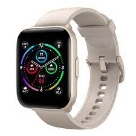

Informática
Inicio
Informatica
Videojuegos
Libros
Peliculas

Mibro C2 Reloj Smartwatch Beige
39.99€
La pantalla táctil a color de 1,69" HD de Mibro C2 está fabricada con tecnología de corte de diamante, lo que garantiza una visualización de colores vivos y una legibilidad fluida.
Además, también han agregado tecnología de aceite antihuellas dactilares a la superficie de la pantalla del reloj, manteniendo la pantalla siempre limpia y clara.
Combina perfectamente con tu look.
Hay dos colores disponibles que hacen que su reloj sea más versátil y moderno, ya sea que lo use para una ocasión o para ir al gimnasio.
Las pulseras de gel de silicona líquida de calidad alimentaria pueden aislar mejor la suciedad y el polvo, lo que hace que el reloj sea cómodo de llevar.
Caracteristicas
Personaliza tu propia esfera del reloj: El mercado de esferas de reloj ofrece una variedad de esferas de reloj creativas y coloridas que se adaptan a su estado de ánimo. También puedes personalizar la tuya con tus fotos favoritas desde tu dispositivo móvil.
Siempre conoce tu corazón: Mibro C2 puede controlar con precisión su frecuencia cardíaca de forma dinámica, sin importar cuándo esté haciendo ejercicio o durmiendo. Puedes tomar medidas para consultar tu salud antes en cuanto encuentres irregularidades en los datos.
Monitoreo de oxígeno sin sangre: La saturación de oxígeno en la sangre es un indicador importante de la circulación metabólica. La saturación normal de oxígeno en la sangre del cuerpo humano está por encima del 95%. Micro C2 ayuda a medir el nivel de oxígeno en la sangre y puede ayudarlo a ajustar su estado de manera oportuna cuando pasa mucho tiempo con actividades cerebrales o ejercicio de alta intensidad.
Relaja tu mente y tu cuerpo: Mida la condición de presión de su cuerpo y relaje su cuerpo y mente con el entrenamiento de respiración. Apoye el seguimiento del estrés y realice un seguimiento de su estado de estrés. Puede relajarse y recuperarse con el tiempo a través del entrenamiento de respiración.
Mejora tu calidad de sueño: Mibro C2 puede registrar su tiempo de sueño y la calidad del sueño en detalle a través de la frecuencia de movimiento de su cuerpo. Y la aplicación puede brindarle una variedad de sugerencias para mejorar el sueño para ayudarlo a dormir mejor. Es hora de crear una rutina saludable a la hora de acostarse a partir de ahora.
Seguimiento de todas las formas de moverse: ¡Deja de hacer ejercicios a ciegas! Mibro C2 ofrece 20 modos de deporte para realizar un seguimiento de sus datos de actividad física en tiempo real, incluida la frecuencia cardíaca, las calorías y la duración del entrenamiento. Puedes echar un vistazo a la fecha levantando la muñeca sin romper el ejercicio. ¡Ejercita más científicamente!
2ATM a prueba de agua: El reloj es resistente al agua hasta una profundidad de 50 metros durante 10 minutos. Puedes sacarlo para actividades en aguas poco profundas, como nadar en una piscina. No te preocupes por mojarte si te atrapa la lluvia. Pero está prohibido usar relojes para surf, buceo y spas.
Mayor duración de la batería: Utilizando el sistema de gestión de batería optimizado, el reloj puede durar hasta 7 días. No te preocupes por quedarte sin batería en un día.
Comprenda mejor sus datos de salud con la aplicación "Mibro Fit": El reloj funciona perfectamente con la aplicación "Mibro Fit", que puede registrar varios datos corporales en tiempo real. La frecuencia cardíaca, el conteo de pasos, el sueño y otros datos son claros a primera vista. La aplicación se puede utilizar para la configuración de la función de reloj para crear un reloj personal único.
Especificaciones
Chip principal
- Modelo: HS6621
- Frecuencia: 128 MHz
- En almacenamiento: 256KB RAM
- Sistema operativo: Free-RTOS
Almacenamiento
- RAM: 256 KB
- Flash: 256KB + Expandir 64MB
Pantalla
- Tipo: TFT
- Tamaño: 1,69 pulgadas
- Resolución: 240 * 280:
- Tipo de pantalla táctil: Pantalla completa capacitiva de un solo pun
BLE
- Versión: 5.0
- Modelo: HS6621
- Frecuencia de transmisión: 2.402?2.480 GHz
- Potencia de transmisión: <6dBm
- Distancia de transmisión: >10m
Protocolo Bluetooth
- Soporte de control remoto de música Bluetooth (AVRCP): Sí
Sensor
- Frecuencia cardíaca PPG: VC9201
- Oxígeno en sangre: VC9201
- Sensor G: SC7A22
Duración de la batería
- Tiempo de espera (estado no vinculado): Aprox. 30 días
- Escenarios de uso diario: Aprox. 7 días
- Corriente de apagado: 110uA
- Corriente de espera (estado de enlace): Aprox. 260uA
- Corriente de trabajo (tasa central abierta fuera de la pantalla): Aprox. 400uA
Parámetros de carga
- Corriente de trabajo (frecuencia cardíaca abierta fuera de la pantalla conectado con Bluetooth): Aprox. 400uA
- Modo de carga: Contacto magnético
- Voltaje de carga estándar: DC-5V
- Corriente de carga estándar: Aprox. 100 mA
- Límite de tiempo de carga: Aprox. 3.5 horas
Parámetros de la batería
- Rango de voltaje de carga: 5V+/-0.25
- Tipo: Iones de litio
- Capacidad: 270 mAh
- Temperatura de trabajo: 0 ~ 45 ºC
- Temperatura de almacenamiento: -20 ~ +45 ºC
Condiciones de funcionamiento
- Humedad relativa: 45 ~ 85% HR